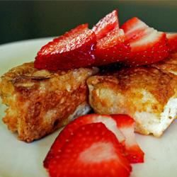

Hell's Slop Hall
Dark Angel Toast

You just woke up and you're craving a light, fluffy cake. Why not take it a step further
and turn that light, fluffy cake into light, fluffy french toast! Even tho this can serve 6
people, who says that you have to share? Make sure to serve with fresh fruit and maple syrup.
Ingredients
1 box of angel food cake mix (18.25 oz)
1 1/4 cups water
4 eggs
1 cup oat milk
2 tbsp brown sugar
1 tsp ground cinnamon
1 tsp vanilla extract
1 pinch of salt
2 tbsp butter, divided
Directions
- Preheat oven to 350 degrees F.
- Beat cake mix and water together in a bowl until moist;
pour into a 10" tube pan.
- Bake in the preheated oven until top is golden brown, cracked, and
looks dry (38-48min). Set aside for at least 8 hours to overnight.
- Whisk eggs, milk, brown sugar, cinnamon, vanilla, and salt together in a bowl.
- Cut cake into 12 slices. Dip to coat each slice into the egg mixture.
- Melt enough of the butter in a large skillet over medium heat to coat the
pan. Cook the cake slices in batches until golden brown (2-3 minutes per side).
Note: top with strawberries, maple syrup, powdered sugar, or whatever freaky
things you're into.